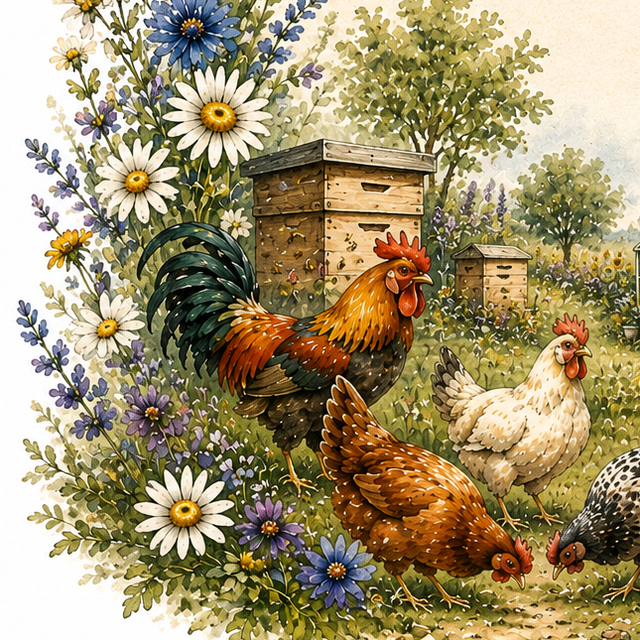
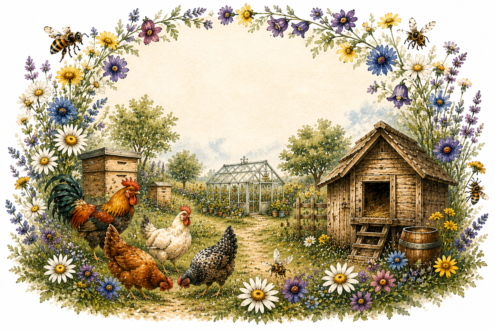
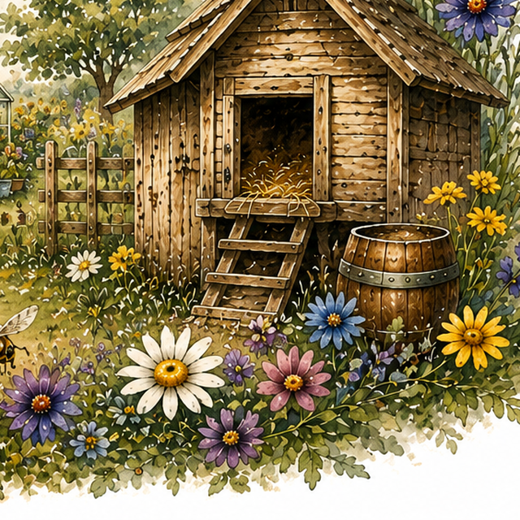
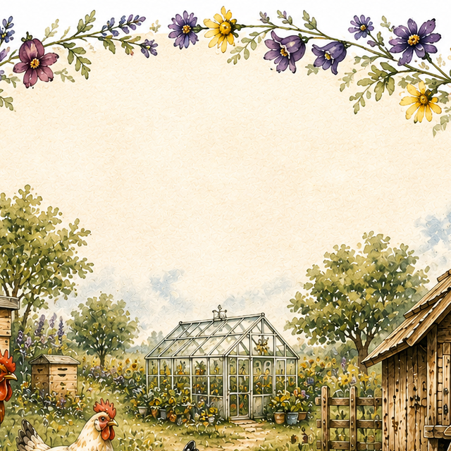

Od našich včel
Med, vosk a další včelí produkty z místní krajiny.

Vítejte u nás v Pod Prosečí. Nabízíme med a další produkty od našich včel, čerstvá vejce od slepiček z volného chovu i další poctivé produkty z naší zahrádky.
Prohlédnout nabídku
Med, vosk a další včelí produkty z místní krajiny.

Čerstvá vejce od slepiček s každodenním přístupem ven.

Bylinky, koření a sezonní dobroty, které sami pěstujeme.
Do košíku přidáte přesně to, co Vám udělá radost.
Systém Vám nabídne nejbližší možné vyzvednutí.
Na e-mail Vám přijde přehled a číslo objednávky.
Den předem Vás kontaktujeme zvoleným způsobem.
S radostí pro Vás připravujeme produkty od našich včel, slepiček a z vlastní zahrádky.